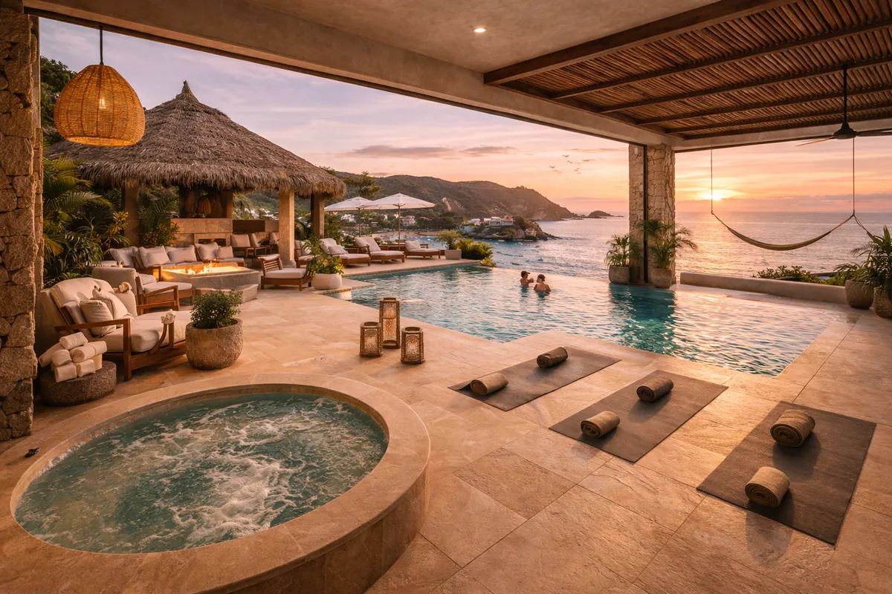
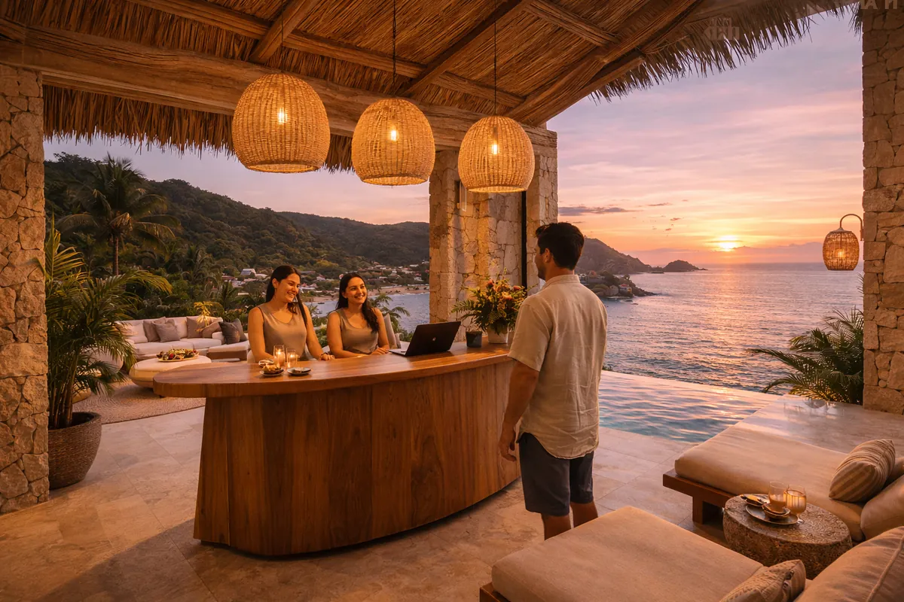

27 townhouses de lujo en el Pacífico mexicano: diseño, naturaleza y serenidad
Town Houses Puerto Ángel es un exclusivo desarrollo residencial compuesto por 27 townhouses de lujo, ubicado en uno de los destinos costeros más auténticos y privados del Pacífico mexicano: Puerto Ángel, Oaxaca.
El proyecto está diseñado para integrarse de manera armónica con el entorno natural, combinando arquitectura contemporánea, materiales nobles y una distribución pensada para maximizar vistas al mar, ventilación natural y privacidad. Cada townhouse ofrece una experiencia de lujo relajado donde el diseño, la tranquilidad y la conexión con la naturaleza son protagonistas.
Todas las unidades cuentan con vistas directas al mar desde terrazas y áreas principales, maximizando la conexión con el entorno.
Diseño moderno integrado a la naturaleza con materiales nobles y ventilación natural que elimina la necesidad de climatización artificial.
Alberca comunitaria, areas de descanso y zonas verdes curadas diseñadas para disfrutar el clima privilegiado de Oaxaca.
Área de wellness y spa con tratamientos inspirados en la rica tradición herbolaria y de bienestar de la costa oaxaqueña.
Espacios diseñados para aprovechar los vientos del Pacífico, frescos y confortables sin necesidad de aire acondicionado.
Desarrollo cerrado con accesos controlados, vigilancia 24/7 y distribución que garantiza privacidad entre unidades.


Puerto Ángel es uno de los destinos costeros más auténticos y privados del Pacífico mexicano. Ubicado en la costa de Oaxaca, ofrece playas cristalinas, gastronomía marina reconocida y una tranquilidad difícil de encontrar en destinos más turísticos.
Contáctanos para obtener más información sobre disponibilidad, opciones de adquisición y la presentación completa del proyecto.